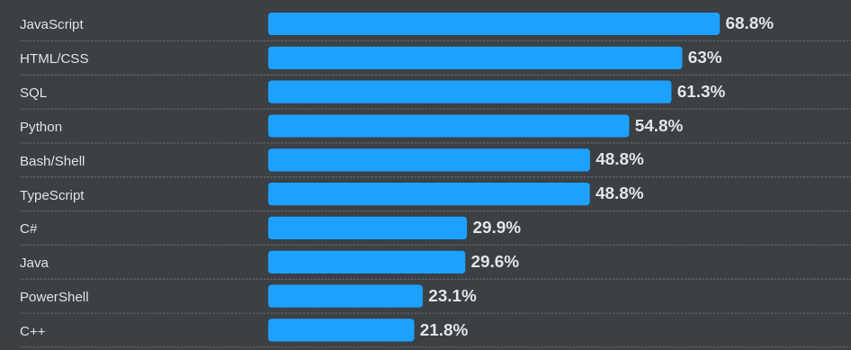
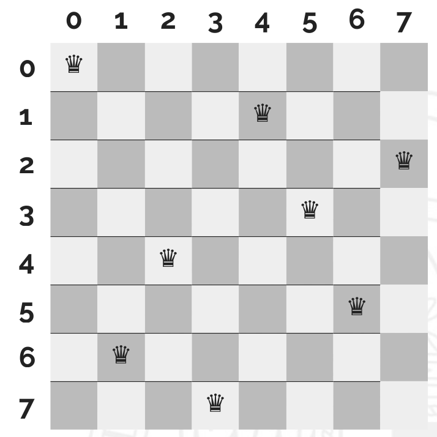
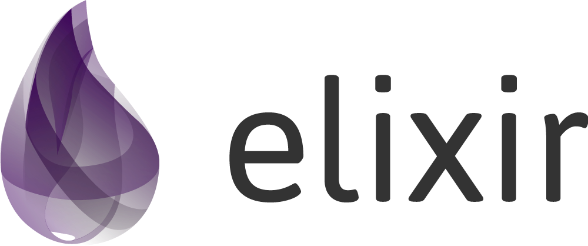
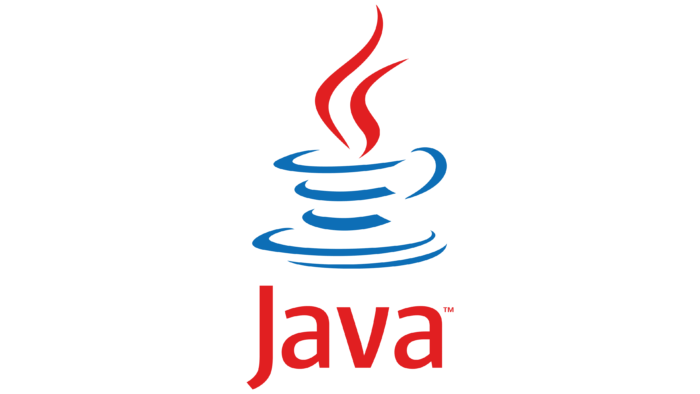
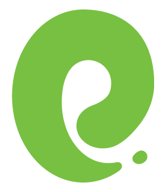
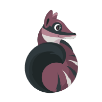
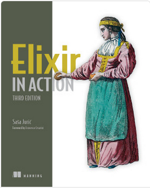
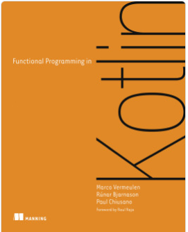
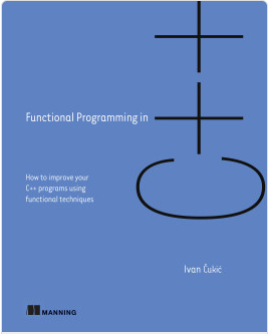

Programación Declarativa Aplicada
Dpto. de Sistemas Informáticos y Computación
Facultad de Informática
Universidad Complutense de Madrid
¿Qué es la programación declarativa?
¿Qué es la programación declarativa?
Es un paradigma (estilo) de programación en el que el programador/a expresa el resultado esperado de un programa sin indicar cómo calcularlo.
«Qué calcular» en lugar de
«cómo calcularlo»
Ejemplo 1
Supongamos que tenemos una lista de personas, cada una con una edad y una lista de viviendas en propiedad.
- Una misma persona puede aparecer varias veces en la lista, cada vez con distintas viviendas.
Cada propiedad está situada en un municipio.
¿Cuántas personas mayores de 50 años tienen una vivienda en el municipio de Lucena?
Solución imperativa en Java
public int
numPersonasLucena(List<Persona>
personas) {
Set<Persona> personasLucena =
new HashSet<>();
for
(Persona p : personas) {
if (p.getEdad() >
50) {
for
(Vivienda v : p.getViviendas()) {
if
(v.getMunicipio().equals("Lucena"))
{
personasLucena.add(p.getId());
break;
}
}
}
}
return
personasLucena.size();
}
Solución declarativa en Java
record Person (int id,
int edad, Stream<Vivienda> viviendas,
...) {}
record Vivienda (String municipio, ...)
{}
public int
numPersonasLucena(List<Persona>
personas) {
return
personas.stream()
.filter(p -> p.edad() > 50)
.filter(p ->
p.viviendas().anyMatch(v -> v.municipio().equals("Lucena")))
.map(p ->
p.id)
.distinct()
.count()
}
Solución declarativa en JavaScript
function numPersonasLucena(personas) {
return new Set(
personas
.filter(p => p.edad > 50)
.filter(p => p.viviendas.some(v => v.municipio === "Lucena"))
.map(p => p.id)
).size;
}Solución declarativa en Elixir
def num_personas_lucena(personas)
do
for p <- personas, p.edad
> 50, any?(p.viviendas, &(&1.municipio == "Lucena")), uniq: true
do
p.id
end |>
length()
end
Solución declarativa
- Enfoque de más alto nivel
- Más fácil de entender (si conoces el lenguaje 😅)
- (A veces) más ineficiente
Paradigmas de programación declarativa
- Programación funcional (Haskell, Erlang, Elixir,
Scala)
- Los programas se definen mediante funciones «matemáticas».
- Programación basada en restricciones (Oz, MiniZinc)
- Se especifican las condiciones que ha de cumplir la solución a un determinado problema.
- Programación lógica (Prolog)
- Los programas se definen mediante predicados lógicos.
- Lenguajes específicos de dominio (SQL, XQuery, HTML)
¿Qué es la programación funcional?
¿Qué es la programación funcional?
- La programación funcional trata los programas como una composición de funciones.
- Las funciones se consideran valores, como cualquier
otro tipo de dato:
- Se pueden pasar como argumentos, se pueden devolver como resultado y se pueden combinar para construir operaciones más complejas.
- Otra característica importante de la programación funcional pura es
la transparencia referencial, obtenida mediante la
inmutabilidad.
- Esto hace que sea más fácil razonar sobre los programas.
Transparencia referencial
Una expresión es referencialmente transparente cuando podemos sustituirla por su resultado sin cambiar el comportamiento del programa.
int cuadrado(int x) {
return x * x;
}
int resultado = cuadrado(5) * cuadrado(5);Podemos sustituir
cuadrado(5)por25:int resultado = 25 * 25;
Ahora consideramos otra función:
public static final int variable_externa = 2;
int otra(int x) {
return x * variable_externa;
}
int resultado = otra(5) * otra(5);La expresión
otra(5)sigue siendo referencialmente transparente. Podemos reemplazarla por10:int resultado = 10 * 10;
¿Qué pasaría con la siguiente expresión?
public static int variable_externa = 2;
int otra(int x) {
variable_externa++; // <- Efecto lateral: modificar variable externa
return x * variable_externa;
}
int resultado = otra(5) * otra(5);La expresión
otra(5)se evalúa a un valor distinto en cada una de sus apariciones.
⚠️ Los efectos laterales (en este caso, modificación de variables externas) hacen que la propiedad de transparencia referencial se pierda.
La programación funcional en la industria
Lenguajes más usados (Stack Overflow developer survey 2025)

« Existen dos tipos de lenguajes: aquellos de los que la gente se queja, y aquellos que nadie usa. »
Bjarne Stroustrup (creador de C++)
¿Qué lenguajes son los más «admirados»?
Stack Overflow Developer Survey 2025
¿De los lenguajes de programación en los que has trabajado durante el último año, en cuáles quieres trabajar durante el próximo año?
- Rust (multiparadigma)
- Gleam (funcional / concurrente)
- Elixir (functional / concurrente)
¿De los frameworks web en los que has trabajado durante el último año, en cuáles quieres trabajar durante el próximo año?
- Phoenix (Elixir)
- Axum (Rust)
- Svelte (JS)
« A menudo se pronosticaba que algún día los lenguajes funcionales dominarían el mundo, pero eso no ha pasado aún. Los lenguajes funcionales más conocidos, como Haskell o Lisp, aún no están en el top 10 de las listas de los lenguajes de programación más populares. Esas listas siguen estando copadas por los lenguajes imperativos tradicionales, como C, Java y C++. »
Ivan Čukić
pero…
«En lugar de aumentar la popularidad de los lenguajes funcionales, está pasando otra cosa: los lenguajes de programación populares han empezado a incorporar características inspiradas por los lenguajes de programación funcionales.»
¿Qué es la programación con restricciones?
Ejemplo: el problema de las 8 reinas
Tenemos un tablero de ajedrez de 8×8 casillas.
Queremos colocar 8 reinas en ese tablero.
¿Cómo podemos colocar las reinas de manera que no se ataquen entre ellas?

Solución imperativa en Java (vuelta atrás)
public static void main(String[] args) { resolver(0); }
static void
resolver(int fila)
{
if (fila == 8)
{
mostrarSolucion();
return;
}
else {
for (int columna = 0; columna
< 8; columna++)
{
if (esFactible(fila, columna))
{
tablero[fila] =
columna;
resolver(fila + 1);
}
}
}
}
static
boolean esFactible(int fila, int columna) {
for (int i = 0; i < fila;
i++) {
if (tablero[i] == columna)
{
return
false;
}
if (Math.abs(tablero[i]
- columna) == Math.abs(i - fila))
{
return
false;
}
}
return
true;
}
Solución declarativa (MiniZinc)
% q[i] = columna en la que está la reina de la fila i-ésima
array[1..8] of var 1..8: q;
% No puede haber dos reinas en la misma columna
constraint alldifferent(q);
% No puede haber dos reinas en la misma diagonal
constraint forall(i, j in 1..8 where i < j) (
abs(q[i] - q[j]) != abs(i - j)
);
solve satisfy;
output [
"Fila " ++ show(i) ++ ": columna " ++ show(q[i]) ++ "\n"
| i in 1..8
];Objetivos del curso
Objetivos
- Conocer las técnicas de programación funcional concurrente (con Elixir)
- Aplicar estas técnicas a lenguajes imperativos mainstream (Java, JavaScript, etc.)
- Utilizar arquitecturas funcionales para el desarrollo de sistemas web.
Requisitos
Conceptos básicos de:
- Programación
- HTML
PDAP te gustará si…
- Te gustan los lenguajes de programación
- Has cursado PD (y te gustó 💃)
- Quieres aprender nuevas maneras de programar
PDAP no te gustará si…
- Tienes alergia a los lenguajes de alto nivel
- Eres adicto/a a las micro-optimizaciones
Metodología
Metodología
Teoría
Material en el Campus Virtual.
No todas las diapositivas se explicarán en clase de teoría; algunas de ellas son para estudio individual fuera de clase.
Práctica
Realización de ejercicios en el ordenador
Algunos de los ejercicios son entregables al final de clase y puntúan para la evaluación continua; otros no.
Evaluación
Evaluación
Modalidad A
- Ejercicios (40 %)
- Mini-proyecto (40 %)
- Presentación (20 %)
Modalidad B
- Examen (80 %)
- Mini-proyecto (20 %)
Ejercicios (40 %)
En algunas de las sesiones de laboratorio se propondrán ejercicios que serán entregables.
Para obtener la calificación máxima se requiere entregarlos en esa misma sesión.
- Se pueden entregar después de la sesión de laboratorio, pero la calificación máxima obtenible será menor.
Son individuales
Mini-proyecto (40 %)
Desarrollo de un proyecto de tamaño pequeño-mediano integrando las herramientas vistas durante el curso.
Fecha de entrega: 22 de enero.
A mediados de noviembre se expondrán las propuestas de proyecto.
- Se admiten propuestas propias de los estudiantes.
Son individuales
Presentación (20 %)
Lista de temas ofertadas por el profesor.
- Se admiten propuestas propias de los estudiantes.
Los temas están relacionados, principalmente, con el uso del paradigma funcional en lenguajes imperativos (objetivo 2 del curso).
Fecha de presentaciones: 12 de enero a las 17:00
Son individuales
Regla de oro para no suspender
En las prácticas y mini-proyecto:
No entregues una sola de línea de código cuyo funcionamiento no sepas explicar.
En la presentación:
No digas una sola frase cuyo significado no sepas explicar.
Software
Lenguajes y entornos de desarrollo


Plugin para desarrollo Elixir en VS Code
https://marketplace.visualstudio.com/items?itemName=JakeBecker.elixir-ls
Elixir
Es un lenguaje de programación funcional concurrente.
- Al contrario que Haskell, no es un lenguaje funcional puro.
Se basa en la máquina virtual de Erlang, que permite manejar miles de procesos de manera eficiente.
Diseñado para aplicaciones distribuidas y escalables, y sistemas de tiempo real.
Potente sistema de macros que facilita el uso de frameworks y bibliotecas.
Utilizado en:
Bibliotecas de Elixir más utilizadas


Phoenix: Framework para desarrollo de aplicaciones web:
https://www.phoenixframework.org/
Según Stack Overflow Developer Survey 2025, framework web más admirado.
Ecto: Framework para bases de datos relacionales
Numerical Elixir (Nx): Conjunto de bibliotecas para cálculo numérico, aprendizaje automático, IA, etc.
Bibliografía
Bibliografía
S. Juric
Elixir in Action (3rd edition)
Manning publications, 2024D. Thomas
Programming Elixir 1.6
The Pragmatic Programmers, 2018


V. Venkat Subramaniam
Functional Programming in Java (2nd edition)
The Pragmatic Programmers, 2023M. Vermeulen, R. Bjarnason, P. Chiusano
Functional Programming in Kotlin
Manning publications, 2021I. Čukić
Functional Programming in C++
Manning publications, 2018


